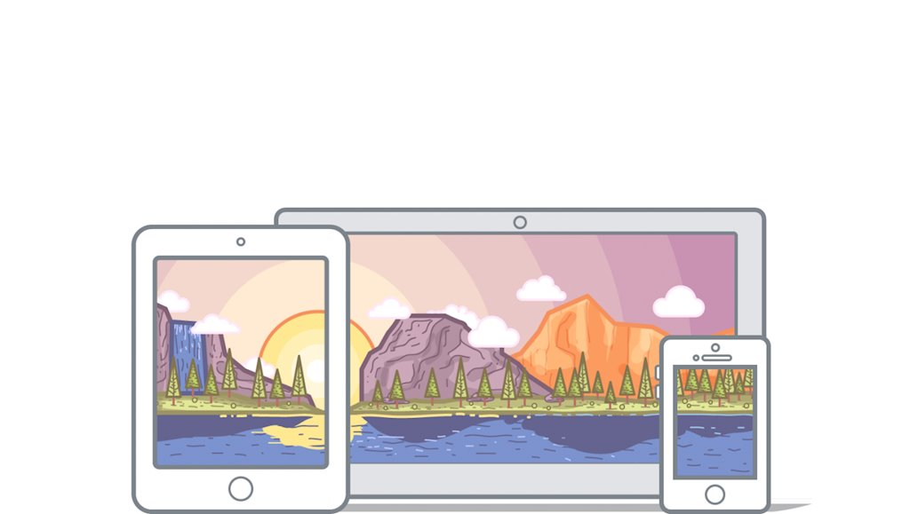

Giới thiệu về hệ điều hành macOS
Mac OS (viết tắt của Macintosh Operating System) là một hệ điều hành độc quyền, được phát triển và phân phối bới Apple dành cho các máy tính Macintosh.
macOS (trước đây là Mac OS X, sau là OS X) là thế hệ tiếp nối của Mac OS, là một hệ điều hành kiểu Unix.
Sự phát triển của hệ điều hành macOS
-
03/2001
OS X 10.0
CHEETAH
Bao gồm giao diện người dùng mới của Apple là Aqua và phiên bản đầu tiên các ứng dụng như TextEdit, Preview, Mail và QuickTime cũng được giới thiệu. Vào thời gian đó, phiên bản OS 10.0 yêu cầu 128MB RAM và 800MB bộ nhớ ổ đĩa.
-
09/2001
OS X 10.1
PUMA
Tập chung vào cải thiện hiệu năng hệ thống. Với Mac OS X 10.1.2, Apple đã bắt đầu đem OS X mặc định trên các máy tính mới, thay thế cho OS 9 mãi mãi.
-
08/2002
OS X 10.2
JAGUAR
Ra mắt bao gồm các ứng dụng mới như iChat và Address Book. Nó cũng giới thiệu Universal Access – sự kết hợp giúp OS X tiện dụng với người dùng hơn với những người có vấn đề về việc nghe nhìn và những người khuyết tật. Bên cạnh đó, OS 10.2 có màn hình khởi động mới, thay thế logo Happy Mac và thay bằng quả táo Apple cho tới bây giờ.
-
10/2003
OS X 10.3
PANTHER
Là phiên bản đem lại cho người dùng một chút cảm giác quen thuộc với Microsoft. Internet Explorer for Mac đã bị thay thế bằng Safari và đặt là trình duyệt mặc định. Mặt khác, 10.3 đem lại nhiều cải tiến khả năng tương tác với Microsoft Windows (bao gồm cả hỗ trợ bên ngoài cho Active Directory). Ngoài ra, Apple cũng đã giới thiệu Exposé để cải thiện khả năng làm việc với nhiều ứng dụng đang mở.
-
04/2005
OS X 10.4
TIGER
Đem đến tính năng không mấy giá trị là tìm kiếm Spotlight. Nó cũng là phiên bản đầu tiên giới thiệu các Widget như máy tính, lịch hoặc đồng hồ trên Dashboad mới. Bên cạnh đó, Mac OS X 10.4 cũng được cài đặt trên Mac với bộ vi xử lí Intel đầu tiên và chiếc Apple TV đầu tiên (hai thiết bị này ra mắt vào năm 2007 sau đó).
-
10/2007
OS X 10.5
LEOPARD
Tích hợp hệ thống sao lưu với tên khá ngầu Time Machine. Nó cũng đem đến hỗ trợ đầy đủ các ứng dụng 64-bit đến người dùng.
-
08/2009
OS X 10.6
SNOW LEOPARD
Được xây dựng vượt trội hơn hẳn người em Leopard. Và Apple đã giới thiệu Mac App Store mới được lấy cảm hứng từ App Store trên iOS.
-
07/2011
OS 10.7
LION
Là phiên bản đầu tiên của Mac OS không còn khả dụng trên CD và DVD, hệ điều hành giờ đây có thể tải về và nó cũng có nhiều tính năng tương tự từ iOS: Cử chỉ, Lauchpad, Windows restoring,..., iCloud cũng được trình diễn lần đầu trên Mac OS 10.7.
-
07/2012
OS X 10.8
MOUNTAIN LION
Đem đến rất nhiều các ý tưởng thành công từ iOS đến Mac: ứng dụng Messages thay thế iChat, Ứng dụng nhắc nhỏ và Trung tâm Thông Báo.
-
10/2013
OS X 10.9
MAVERICKS
Apple đã không những giới thiệu sơ đồ tên gọi mới cho hệ điều hành mà còn tung ra OS 10.9 miễn phí và hứa hẹn các cập nhật trong tương lai cũng sẽ miễn phí cùng với việc ra mắt các ứng dụng như Maps và iBooks.
-
10/2014
OS X 10.10
YOSEMITE

Thay đổi thiết kế lớn nhất trong năm, phiên bản Mac OS 10.10 đi theo người em bé nhỏ là iOS với các vẻ ngoải phẳng hơn và hiệu ứng mờ. Với tính năng Handoff, người dùng lúc này đã có thể di chuyển trơn tru các thiết bị. Ngoài ra Apple cũng nhấn mạnh tính năng Full Screen Mode.
-
09/2015
OS X 10.11
EL CAPITAN
Cải tiến về hiệu năng và sự ổn định. Bên cạnh các cải tiến nhỏ cho Safari, Spotlight, Mail và Note, sự giới thiệu Split Views có lẽ là thứ đáng nhắc đến khi đem lại khả năng sắp xếp 2 ứng dụng liền nhau trong một cửa sổ.
-
09/2016
macOS 10.12
SIERRA
Đặc biệt, phiên bản này đã chấm dứt cái tên OS X, hệ điều hành của Mac từ lúc này đã trở thành macOS. Siri lúc này cũng đã có mặt trên macOS, Safari cũng giới thiệu chính thức Apple Pay và Apple Watch có thể mở khoá Mac.
-
09/2017
macOS 10.13
HIGH SIERRA
Tập trung vào cải thiện hiệu năng và độ ổn định là chính. Apple File System là một ví dụ, đem việc chuyển các tập tin nhanh hơn và bảo mật hơn. Với HEVC, Apple giờ đây đã hỗ trợ chuẩn video mới với khả năng nén tốt hơn 40% so vơi các phiên bản trước.
-
9/2018
macOS 10.14
MOJAVE
Chế độ Dark Mode được tích hợp cùng với rất nhiều tính năng mới như: Continuity Camera, Dynamic Desktop,...
-
10/2019
macOS 10.15
CATALINA
Giờ đây chiếc iPad có thể biến thành màn hình thứ 2 với Sidecar. Voice Control được tích hợp giúp dễ dàng điểu khiển máy tính bằng giọng nói.
Ưu điểm
Sự ổn định: Mac OS của Apple được đánh giá là một nền tảng ổn định, tuy so với Windows không ai hoàn hảo hơn ai nhưng theo nhiều người nhận xét, Mac hoạt động một cách mượt mà hơn.
Đồng bộ hóa giữa các thiết bị của Apple: Khi sử dụng cùng lúc các sản phẩm của Apple như: iphone, ipad, macbook...bạn sẽ dể dàng trong việc kết nối và chia sẻ dữ liệu qua lại.
Bảo mật cao: So với Windows hay Linux thì tính năng bảo mật của Mac OS được dánh giá cao hơn, bạn sẽ không phải lo lắng về rò rỉ dữ liệu hay bị hacker tấn công.
Tiện dụng: Không khó để người mới dùng lần đầu làm quen với hệ điều hành Mac OS bởi giao diện đơn giản, tất cả được sắp xếp mang tính logic cao.
Nhược điểm
Số lượng ứng dụng còn hạn chế: Do thị phần quá ít so với windows nên hầu hết nhà sản xuất đề tập chung cho windows trước. Trường hợp với những ứng dụng trên Windows chưa hỗ trợ được trên Mac thì có thể sử dụng bằng phương pháp giả lập trên Mac.
Chỉ hỗ trợ được máy tính của Apple: Thực chất nền tảng của Mac chỉ được sử dụng trên dòng máy tính của Apple có thể nói đây cũng là hạn chế khá lớn.